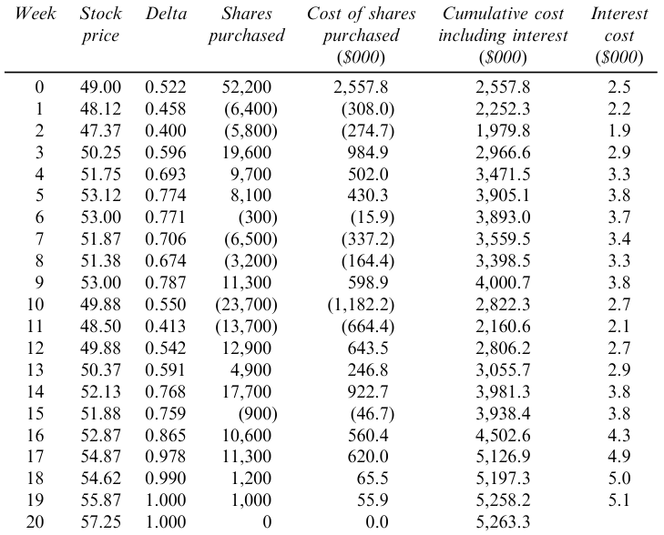

11 The Greek Letters
- HULL, John. Options, futures, and other derivatives. Ninth edition. Harlow: Pearson, 2018. ISBN 978-1-292-21289-0.
- Chapter 19 - The Greek Letters
- PIRIE, Wendy L. Derivatives. Hoboken: Wiley, 2017. CFA institute investment series. ISBN 978-1-119-38181-5.
- Chapter 4 - Valuation of Contingent Claims
Learning Outcomes:
- Identify and describe the Greek letters used in options trading.
- Explain the concept of Delta and its importance in hedging strategies.
- Understand Gamma and its impact on the curvature of the options price relative to the stock price.
- Comprehend Theta and how time decay affects the value of options.
- Explore Vega and its relationship with volatility in the pricing of options.
- Recognize Rho and its sensitivity to changes in interest rates.
- Develop strategies for managing Delta, Gamma, and Vega to optimize risk and return in options portfolios.
11.1 Case Study
- A bank sells a European call option for $300,000, covering 100,000 shares of a stock that does not pay dividends.
- Initial Stock Price (\(S_0\)): $49
- Strike Price (\(K\)): $50
- Risk-Free Rate (\(r\)): 5%
- Volatility (\(\sigma\)): 20%
- Time to Expiration (\(T\)): 20 weeks
- Expected Return (\(\mu\)): 13%
- Black-Scholes-Merton Valuation: $240,000
- Objective: Determine how the bank can hedge its risk to secure a $60,000 profit.
Naked Position
- Description: The bank takes no protective action against the position’s exposure.
- Risk Analysis: This strategy leaves the position fully exposed to market fluctuations, with potential unlimited losses if the stock price rises significantly.
Covered Position
- Description: The bank purchases 100,000 shares immediately.
- Risk Analysis: Although this strategy can mitigate the risk if the stock’s price increases above the strike price, it requires significant capital investment and is exposed to loss if the stock price declines.
Dynamic Hedging: Stop-Loss Strategy
Buy: 100,000 shares are purchased when the stock price hits $50.
Sell: 100,000 shares are sold when the stock price drops below $50.
Risk: This approach attempts to limit losses by dynamically adjusting the position based on stock price movements. However, it may lead to high transaction costs and potential slippage; the actual transaction price may not always align with the trigger price due to market volatility.
The most efficient way to hedge would be to use Greek letters.
11.2 The Greek Letters
Greek letters are vital tools in options trading, providing a quantitative understanding of the sensitivity of an option’s price to various factors. These metrics are crucial for effective risk management and strategic decision-making in trading portfolios.
- The Greeks are typically calculated using the Black-Scholes-Merton (BSM) model, a foundational tool in financial mathematics for valuing options.
- The Greek letters are the partial derivatives with respect to the model parameters that are liable to change.
- In practice, the volatility parameter in the BSM model is set to the implied volatility of the option, a modification often referred to as the “practitioner Black-Scholes” model.
- The discussion here pertains primarily to European options on non-dividend-paying stocks.
Description of Key Greeks
The Greeks measure the sensitivity of the option’s price to one of the underlying parameters, holding all other parameters constant. Each Greek addresses a different risk factor:
Delta (\(\Delta\)): Measures the rate of change of the option’s price with respect to changes in the underlying asset’s price. Specifically, delta is the first derivative of the option’s price with respect to the stock’s price. For instance, a delta of 0.6 suggests the option’s price will move approximately $0.60 for every $1.00 movement in the underlying stock.
Gamma (\(\Gamma\)): Represents the rate of change of delta with respect to changes in the underlying asset’s price. Gamma helps assess the stability of an option’s delta, providing insight into how delta might change as the stock price varies. High gamma values indicate that delta is highly sensitive to changes in the stock price.
Theta (\(\Theta\)): Measures the sensitivity of the option’s price to the passage of time, known as “time decay.” Theta indicates the expected rate of change in the option’s price for a one-day decrease in its time to expiration. This is particularly important as the option approaches its expiry date.
Vega (\(\nu\)): Quantifies the sensitivity of the option’s price to changes in the volatility of the underlying asset. A vega of 1.5 suggests that the option’s price is expected to change by $1.50 for every 1% change in the implied volatility of the underlying stock.
Rho (\(\rho\)): Measures the sensitivity of the option’s price to changes in the risk-free interest rate. For instance, a rho of 0.05 indicates that the option’s price will change by $0.05 for every 1% change in interest rates.
11.3 Understanding Delta (\(\Delta\))
Delta is a measure of an option’s price sensitivity relative to changes in the price of the underlying asset. It’s expressed as the amount an option’s price is expected to move for a one-unit change in the price of the underlying asset.
The followint graph showing how delta varies with stock price for call and put options.
Call Option (a): Delta increases as the stock price rises, peaking near 1 as the option goes deep in-the-money.
Put Option (b): Delta decreases (becomes more negative) as the stock price drops, indicating increased sensitivity as the option moves further in-the-money.
The next graph showing how delta changes as time to maturity decreases.
Delta’s sensitivity to time decay depends on the moneyness of the option. For options that are exactly at-the-money, delta converges to 0.5. For out-of-the-money options, it approaches zero because such options are likely to expire worthless, whereas for in-the-money options, delta converges to 1.
Delta Hedging: Principles and Practices
Delta hedging is a strategy used to mitigate risk in option trading by setting up a position in the underlying asset. The position’s size is determined by the option’s delta, aiming to neutralize the effect of small price movements of the underlying asset.
To achieve delta neutrality, the required number of units to hedge, \(N_H\), is calculated using the formula: \[N_H = -\left(\frac{\text{Portfolio delta}}{\text{Delta of the hedging instrument}} \right)\]
A delta-neutral portfolio implies a total delta of zero, indicating no sensitivity to small price movements in the underlying stock. Note that the delta of the stock itself is always 1.
Rebalancing: Delta values change as the stock price fluctuates and as time passes, necessitating periodic rebalancing of the hedge (buy high, sell low).
Delta for Calls and Puts: The delta of a European call option on a non-dividend paying stock is represented by \(N(d_1)\), whereas for a put, it’s \(N(d_1) - 1\).
Consider an investor who holds a short position in 1,000 call options, each with a delta of -0.6. Create a delta-neutral portfolio to shield against small price movements.
Current Delta: \(1,000 \times -0.6 = -600\)
Hedging Action: Purchase 600 shares of the stock (since each stock has a delta of 1).
This strategy ensures that any gain or loss on the options is countered by a corresponding loss or gain in the stock holdings.
Consider a portfolio comprising 1,000 shares of a non-dividend-paying stock. Each share contributes a delta of 1 to the portfolio, resulting in a total portfolio delta of 1,000.
To achieve delta neutrality using call options with a delta of 0.40, we calculate the required number of calls to sell:
\[N_H = -\left(\frac{1,000}{0.40}\right) = -2,500\]
This means selling 2,500 call options ensures that the positive delta from the stock holdings is exactly offset by the negative delta contribution from the short call positions.
Consider a scenario where you have a short position in 10,000 shares of a non-dividend-paying stock:
Using Call Options for Hedging:
- Option Delta (\(\Delta_c\)): 0.668
- To neutralize the negative delta of -10,000 from the short stock position, you would need to purchase call options to increase delta:
\[N_H = -\left(\frac{-10,000}{0.668}\right) = 14,970\]
Purchasing 14,970 call options will add a positive delta, balancing out the negative delta from the short stock position.
Using Put Options for Hedging:
- Option Delta (\(\Delta_p\)): -0.332
- To balance the negative delta, you can use put options which inherently have a negative delta:
\[N_H = -\left(\frac{-10,000}{-0.332}\right) = -30,120\]
Selling 30,120 put options would counteract the negative delta from the short stock position, achieving neutrality.
Hedging Cost Scenarios from Case Study
The following table presents a simulation of hedging dynamics when the option expires in-the-money, with total hedging costs amounting to $263,300:

The cost reflects the higher intrinsic value and sensitivity (delta) as the option gains worth.
If the option expires out-of-the-money, the costs should be slightly lower, as reduced delta correlates with a decreased likelihood of the option finishing in-the-money.
11.4 Understanding Gamma (\(\Gamma\))
Gamma (\(\Gamma\)) is the second derivative of the option’s price with respect to the underlying asset’s price. It measures the rate of change of delta (\(\Delta\)) and is crucial for understanding the curvature or the convexity of the option’s value in relation to the stock price. It’s crucial for assessing the stability of an option’s delta, thus influencing how often a delta-hedged portfolio needs rebalancing. Here are some key characteristics of gamma:
- Zero for Stocks: Gamma for a long or short position in a single share of stock is zero because a stock’s delta does not change.
- Symmetry for Calls and Puts: Gamma is identical for both call and put options.
- Non-negativity: Gamma is always non-negative. It reaches its highest value when an option is at-the-money, highlighting increased sensitivity at this point.
- Risk Measurement: Gamma quantifies the non-linearity risk—risk that remains in a delta-neutral portfolio due to price movements of the underlying asset.
Gamma and Hedging Dynamics
Gamma plays a critical role in addressing potential errors in delta hedging, particularly when stock prices exhibit significant movement:
- Small Changes: For minor fluctuations in stock price, delta hedging generally performs well.
- Larger Shifts: For more substantial stock price movements, delta-plus-gamma hedging provides greater accuracy, accommodating the curvature in the relationship between an option’s price and the stock price.
- Gamma Risk: This term refers to the risk arising from sudden, significant movements in stock prices—often referred to as jumps—which can leave a previously well-hedged position exposed. Gamma risk is particularly relevant in markets characterized by high volatility or discontinuous price movements.
- Theta and Gamma Interaction: Typically, when theta is large and negative, indicating substantial time decay benefits, gamma tends to be large and positive. This inverse relationship highlights the trade-offs between potential profitability from time decay and the risk from larger price movements.

This chart demonstrates how gamma peaks when an option is at-the-money and diminishes as the option moves deeper into or out of the money. This pattern underscores the heightened sensitivity and potential risk/reward near the at-the-money point.
Gamma increases as the option approaches expiration, particularly for at-the-money options. This increase reflects growing sensitivity to stock price movements as time to exercise decreases, emphasizing the importance of precise hedging strategies in the final days before an option’s expiration.
11.5 Understanding Theta (\(\Theta\))
Theta (\(\Theta\)) represents the sensitivity of the price of an option or a portfolio of derivatives to the passage of time, assuming all other factors remain constant. It is a critical component in options pricing, reflecting the temporal decay of an option’s value.
- Directionality: Theta is typically negative for both calls and puts. This reflects the loss in time value as options approach their expiration date.
- Non-applicability to Stocks: Since stocks do not have an expiration date, they inherently have a theta of zero.
- Impact on Options: Each day closer to expiration decreases the option’s time value, reducing its price if other conditions remain unchanged.
The graph illustrates how theta behaves relative to the stock price for a call option. Notably, theta becomes increasingly negative as the option moves around at-the-money.
This visualization shows theta’s behavior as the option nears its expiry. Theta typically becomes more negative as expiration approaches, indicating an acceleration in the rate of time value decay. This is most pronounced for at-the-money options, where the uncertainty about finishing in-the-money is highest.
- Theta vs. Hedge Parameters: Unlike delta, which can be hedged, theta represents a guaranteed decline in value over time and is not a hedgeable risk. However, its predictability and inevitability make it a significant factor in options strategy.
- Descriptive Utility: Despite its non-hedgeable nature, theta is considered a useful descriptive statistic for portfolios, particularly in strategies aimed at earning through time decay, such as selling options.
- In a delta-neutral setting, where the portfolio is insulated against small price movements in the underlying asset, theta can serve as an indirect measure of gamma exposure. This relationship arises because high gamma values, which indicate greater sensitivity to price changes, usually accompany high rates of time decay (theta). Thus, monitoring theta provides insights into potential gamma risks in the portfolio.
11.6 Understanding Vega (\(\nu\))
Vega represents the rate of change in the value of an option or a derivatives portfolio with respect to changes in volatility. This Greek is crucial in options trading, reflecting how the price of options reacts to fluctuations in the underlying asset’s volatility.
Vega highlights the impact of volatility, an essential but unobservable market factor that significantly influences option pricing. Future volatility, being an estimation, adds a layer of complexity and risk in predicting option values.
- Directionality: Vega is always positive. An increase in the implied volatility of the underlying asset generally leads to an increase in the value of both call and put options.
- Symmetry: The vega of a call option is equal to the vega of a put option with the same terms.
- Calculation: For a portfolio, vega can be understood as a weighted average of the vegas of the individual positions, reflecting the aggregate sensitivity to a uniform shift in implied volatilities across the portfolio.
- Volatility Sensitivity: Of all the Black-Scholes-Merton (BSM) model variables (stock price, strike price, time to expiration, risk-free rate, and volatility), an option’s price is most sensitive to changes in volatility. This sensitivity makes vega a key focus in risk management and trading strategies.
The chart illustrates how vega changes in relation to the stock price. Vega tends to be higher when an option is at-the-money and decreases as the option moves deeper into or out of the money. This pattern reflects the increased sensitivity to volatility changes when the option’s strike price is near the current stock price, where the uncertainty about the outcome at expiration is greatest.
11.7 Understanding Rho (\(\rho\))
Rho represents the sensitivity of an option or a derivatives portfolio’s value to changes in the risk-free interest rate. It is one of the lesser-focused Greeks but plays a crucial role in environments where interest rate fluctuations are significant.
- Directionality: Rho is typically positive for call options and negative for put options. This reflects the different financial implications of options:
- Call Options: A positive Rho for call options indicates that their value increases as interest rates rise. This is because higher rates reduce the present value of the exercise price paid at expiration, making it cheaper in present terms to buy the stock at a future date.
- Put Options: Conversely, a negative Rho for put options means their value decreases as interest rates rise. Higher rates increase the present value of the proceeds received from selling the stock in the future, thus decreasing the attractiveness of holding a put.
The sensitivity to interest rates through Rho might seem minor compared to other Greeks like Delta or Vega, but it can become significant in certain financial environments:
- High Interest Rate Volatility: In periods of significant interest rate changes, Rho becomes a more critical factor for traders, especially those dealing with long-dated options where the cumulative impact of rate changes can be substantial.
- Portfolio Management: For portfolios that include a mix of long-dated options and bonds, understanding and managing Rho is vital to hedge interest rate risks effectively.
11.8 Strategic Management of Delta, Gamma, and Vega
Proper management of the Greek values—Delta, Gamma, and Vega—is essential for maintaining balanced options portfolios that align with specific risk management objectives. Here, we outline techniques to achieve neutrality in these Greeks through strategic positioning in options and the underlying asset.
Delta: This Greek can be adjusted directly by taking positions in the underlying asset. For instance, buying or selling stock can increase or decrease the portfolio’s delta.
Gamma and Vega: Adjustments to gamma and vega generally require engaging in positions in options or other derivatives, as these Greeks measure sensitivity to changes in the underlying asset’s price and volatility, respectively.
The general approach involves first hedging vega and/or gamma using options, and then as a final step, using underlying assets to reduce delta to zero. This sequence is important because hedging vega and gamma can alter delta, whereas hedging using underlying assets does not affect vega or gamma.
| Delta | Gamma | Vega | |
|---|---|---|---|
| Portfolio | 0 | -5000 | -8000 |
| Option 1 | 0.6 | 0.5 | 2.0 |
| Option 2 | 0.5 | 0.8 | 1.2 |
- Achieving Delta and Gamma Neutrality:
- Required Position: Long 10,000 units of Option 1 and short 6,000 units of the underlying asset.
- Rationale: This positioning uses the delta and gamma from Option 1 to offset the existing negative gamma in the portfolio while also balancing delta.
- Achieving Delta and Vega Neutrality:
- Required Position: Long 4,000 units of Option 1 and short 2,400 units of the underlying asset.
- Rationale: This configuration uses Option 1’s vega to counteract the portfolio’s negative vega while adjusting the delta with a corresponding position in the underlying asset.
- Achieving Delta, Gamma, and Vega Neutrality Across Multiple Options:
- System of Equations:
- For Gamma: \[-5000 + 0.5 w_1 + 0.8 w_2 = 0\]
- For Vega: \[-8000 + 2.0 w_1 + 1.2 w_2 = 0\]
- Solution: Long 400 units of Option 1 and 6,000 units of Option 2, with a short position of 3,240 units in the underlying asset to achieve complete neutrality in delta, gamma, and vega.
- System of Equations:
Hedging in Practice
Daily Delta Neutrality: Traders typically adjust their portfolios to be delta-neutral at least once per day to manage risk effectively against price movements in the underlying asset.
Opportunistic Gamma and Vega Adjustments: While daily adjustments for delta are common, adjustments for gamma and vega are made as opportunities arise, allowing traders to better manage the curvature and volatility risks associated with their positions.
Economies of Scale: As portfolios increase in size, the relative cost of hedging per option decreases, providing cost efficiencies in larger portfolios.
Scenario Analysis: This involves testing different market scenarios and their effects on the portfolio, considering various assumptions about asset prices and volatilities. This analysis helps in understanding potential impacts and preparing for various market conditions.
11.9 Practice Questions and Problems
Explain how a stop-loss trading rule can be implemented for the writer of an out-of-the money call option. Why does it provide a relatively poor hedge?
What does it mean to assert that the delta of a call option is 0.7? How can a short position in 1,000 options be made delta neutral when the delta of each option is 0.7?
What does it mean to assert that the theta of an option position is -0.1 when time is measured in years? If a trader feels that neither a stock price nor its implied volatility will change, what type of option position is appropriate?
What is meant by the gamma of an option position? What are the risks in the situation where the gamma of a position is large and negative and the delta is zero?
A bank’s position in options on the dollar–euro exchange rate has a delta of 30,000 and a gamma of 80,000. Explain how these numbers can be interpreted. The exchange rate (dollars per euro) is 0.90. What position would you take to make the position delta neutral? After a short period of time, the exchange rate moves to 0.93. Estimate the new delta. What additional trade is necessary to keep the position delta neutral? Assuming the bank did set up a delta-neutral position originally, has it gained or lost money from the exchange-rate movement?
A financial institution has the following portfolio of stock options:
Type Position Delta Gamma Vega Call -1,000 0.5 2.2 1.8 Call -500 0.8 0.6 0.2 Put -2,000 -0.4 1.3 0.7 Call -500 0.7 1.8 1.4 A traded option is available with a delta of 0.6, a gamma of 1.5, and a vega of 0.8.
- What position would make the portfolio delta neutral?
- What position in the traded option and in stocks would make the portfolio both gamma neutral and delta neutral?
- What position in the traded option and in stocks would make the portfolio both vega neutral and delta neutral?
- Suppose that a second traded option with a delta of 0.1, a gamma of 0.5, and a vega of 0.6 is available. How could the portfolio be made delta, gamma, and vega neutral?
- Long 450 stocks.
- Long 4,000 options and short 1,950 stocks.
- Long 5,000 options and short 2,550 stocks.
- Long 3,200 options 1, long 2,400 options 2, and short 1,710 stocks.